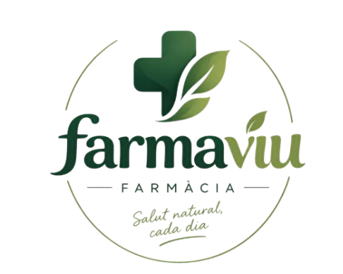

Farmaviu

Farmàcia
Farmaviu és una farmàcia que s'ha posat en contacte amb nosaltres perquè vol millorar i modernitzar la seva infraestructura informàtica. Ens han demanat que els preparem una solució personalitzada que inclogui una pàgina web pròpia i una aplicació adaptada a la gestió del negoci, amb eines específiques per portar el control i organitzar el funcionament diari de la farmàcia.
El projecte també inclou tota la part tècnica: instal·lació i configuració dels ordinadors i dels programes necessaris, preparació de la xarxa i del cablejat, i adequació dels components i equips. La idea és oferir un servei complet, tant de programari com de maquinari, perquè tots els sistemes funcionin correctament i estiguin connectats entre si.